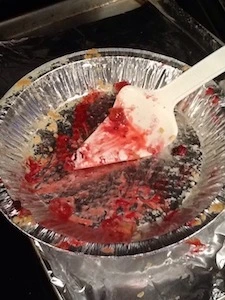

I am the instructions page.
I used to be a .txt file. Then I took a fork to the sweet roll.
The pie remains to be a lie.

Hint: you must leave the "advanced" folder before you can
go into the other folders!
For each page given here, see if you can do the following:
-
On line 6 in all HTML files: add the correct path to the CSS file inside
of the quotes.
<link href="" rel="stylesheet">
-
On lines 13, 14, and 15 in all HTML files, link the pages together by
replacing the # with the correct path.
<li><a href="#">Home</a></li>
-
Wherever an image tag appears, like this:
<!-- <img src="" alt="Pie's all gone!"> -->
- Delete the comment code
<!-- -->
- In between the quotes, enter the correct path to the image.
-
Towards the bottom of each page, find the JavaScript tag:
<script src=""></script>
In between the quotes, enter the correct path to the JavaScript file.
-
If you want a challenge, look in the "advanced" folder and see if you
can complete the same 5 steps above with challenge.html